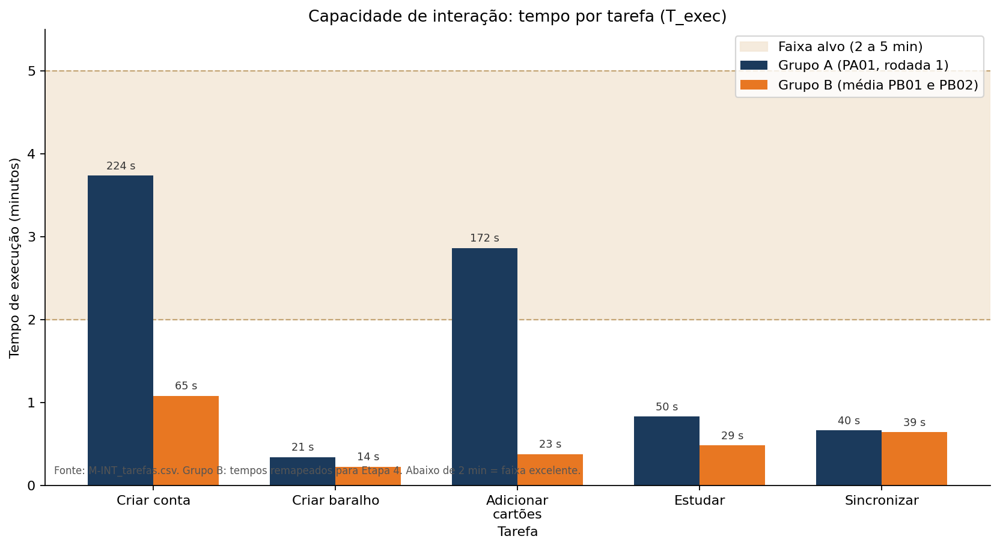

Fase 4: Executar a avaliação e julgar
Esta página registra a obtenção dos dados, a análise GQM frente às questões e hipóteses da Fase 2, o julgamento frente ao propósito da Fase 1, as relações entre características, as sugestões priorizadas e a ação de melhoria obrigatória. As análises detalhadas de Capacidade de interação e de Eficiência de desempenho estão em interacao.md e desempenho.md.
Visão geral da coleta
| Frente | Dados brutos | Métricas e análise | Situação objetiva |
|---|---|---|---|
| Capacidade de interação | Entrevistas/ (PA01, PB01, PB02), gravacoes/, CSV M-INT-* |
M-INT_metricas.csv; análise |
Três participantes; um iniciante (PA01); métricas Trf, Taprend, Tsa, Tct e Texec calculadas |
| Eficiência de desempenho | CSV e gráficos em docs/avaliacao/dados/desempenho/bruto/ e docs/avaliacao/dados/ |
análise de desempenho | Medições em Ubuntu, Windows 11 e macOS; no PC2 restam itens “refazer” e medições incompletas no Windows |
| Flexibilidade | avaliacao/dados/flexibilidade/ (apenas README e .gitkeep) |
análise de Flexibilidade; seção abaixo | Sem CSV de instalação, checklist ou migração e sem gráficos de instalação no repositório (F4-C1/C2 incompletos nesta frente) |
Capacidade de interação
Coleta e notas de cálculo
Três sessões com consentimento (TCLE) e gravação de tela e áudio:
| Código | Data | Modalidade / SO | Grupo e etapas | Evidência |
|---|---|---|---|---|
| PA01 | 14/11/2026 | Presencial, Windows 11 | A (iniciante): Etapas 1 a 3 e 5 | ficha; gravação; ata |
| PB01 | 13/11/2026 | Online, macOS | B (frequente): Etapas 1, 4 e 5 | ficha; gravação; ata |
| PB02 | 13/11/2026 | Online, Windows 10 | B (frequente): Etapas 1, 4 e 5 | ficha; gravação; ata |
Notas de cálculo. O Grupo A executa Etapas 1 a 3 e 5. O Grupo B não executa Etapas 2 e 3. Em PB01, os tempos preenchidos na seção Etapa 2 da ficha foram contabilizados como Etapa 4. Em PB02, os tempos preenchidos na seção Etapa 3 da ficha foram contabilizados como Etapa 4. PA01 é Grupo A; marcação residual “B” na ficha, se houver, é erro de digitação. Detalhe em interacao.md.
Resultados
| Métrica | PA01 | Faixa | PB01 | Faixa | PB02 | Faixa |
|---|---|---|---|---|---|---|
| Trf | 16,7% (1/6) | Insatisfatório | 66,7% | Mínimo | 83,3% | Alvo |
| Taprend | 7 min 36 s (456,05 s) | Excelente | n/a | - | n/a | - |
| Tsa | 100% (4/4 sem ajuda) | Excelente | n/a | - | n/a | - |
| Tct | 80% → 100% (rodadas 1-2) | Mínimo → Excelente | 100% (Etapa 4) | Excelente | 100% (Etapa 4) | Excelente |
| Texec mediana | 50 s | Excelente | 39,31 s | Excelente | 25 s | Excelente |
Agregados do Grupo B. Média de Trf = 75,0% (faixa alvo). Tct = 100% nos dois participantes. Mediana aproximada de Texec ≈ 32 s (faixa excelente).

Figura. Tempo por tarefa alinhado semanticamente (criar conta, criar baralho, adicionar cartões, estudar, sincronizar). Grupo A: PA01, rodada 1. Grupo B: média de PB01 e PB02 (tempos remapeados para Etapa 4). Fonte: M-INT_tarefas.csv. A faixa sombreada é o alvo da Fase 2 (2 a 5 min); valores abaixo de 2 min estão na faixa excelente.
Análise
| Questão | Evidência | Resposta |
|---|---|---|
| Q1 (reconhecibilidade) | Trf de PA01 = 16,7%, abaixo de 75% (alvo) | Não atendida |
| Q2 (aprendizagem) | Taprend = 7 min 36 s e Tsa = 100% em PA01, ambos na faixa excelente | Atendida em PA01 (n = 1 iniciante) |
| Q3 (operabilidade) | Tct = 100% e Texec mediana < 2 min em PB01 e PB02 | Atendida no escopo da Etapa 4 remapeada |
| Hipótese | Julgamento |
|---|---|
| H1 | Rejeitada no iniciante (Trf 16,7%). PB02 só acertou R1 (“Criar baralho”) após três tentativas. |
| H2 | Sustentada em PA01 para o roteiro de aprendizagem. |
| H3 | Sustentada no agregado de frequentes (Tct e Texec em alvo ou excelente), com a ressalva do remapeamento documental das seções da ficha. |
Evidência qualitativa (Etapa 5). PA01 falhou em localizar “Criar baralho” e pediu botões autoexplicativos. PB01 confundiu “nota” com “cartão” e pediu tutorial prático. PB02 descreveu “Criar baralho” como pouco intuitivo na parte inferior da janela e sugeriu reposicioná-lo.
Limitações. Amostra de três participantes, com um único iniciante para Q1 e Q2. Em frequentes, a Etapa 4 foi registrada em seções erradas da ficha (2 ou 3) e remapeada no cálculo das métricas. O julgamento de Capacidade de interação baseia-se nesses três casos e preserva a ênfase 5 da Fase 1.
Eficiência de desempenho
Coleta
A Dupla B instrumentou o Anki Desktop 26.09.3 em três máquinas de referência (Ambiente):
| Avaliador | SO | Arquitetura | Hardware |
|---|---|---|---|
| Mateus de Siqueira | Ubuntu 24.04 LTS | x86_64 | Intel Core i7-1185G7, 8 GB RAM |
| Karolina Vieira | Windows 11 | x86_64 | Intel Core i7-1165G7, 16 GB RAM |
| Davi Severiano | macOS Sequoia | ARM64 | Apple Silicon M4, 16 GB unificada |
Os CSV e gráficos usados nesta página estão em docs/avaliacao/dados/desempenho/bruto/ e docs/avaliacao/dados/ (gráficos de threads). O diretório canônico avaliacao/dados/desempenho/ contém apenas README e .gitkeep.
Ressalvas de medição. No Windows e no macOS, o cold start registrado é o tempo de criação do processo (launcher), não o tempo até a interface pronta (TTI); no Ubuntu, o coletor mediu até a ativação dos subprocessos QtWebEngine (TTI ≈ 1,018 s). A RAM do Windows (73,40 MB em repouso; 26,35 MB no estresse) enumera só o processo pai, sem a árvore de renderizadores. Tsinc foi retirado dos ensaios de laboratório (risco de rate limit no AnkiWeb e dependência de rede externa); a sincronização permanece nas entrevistas (Capacidade de interação) e no cenário M2 de migração (Flexibilidade).
Resultados
Valores tomados de desempenho.md. As faixas abaixo seguem a Tabela VIII da Fase 2, salvo quando a análise de desempenho registra enquadramento próprio e isso é indicado no texto.
| Métrica | Ubuntu 24.04 | Windows 11 | macOS Sequoia | Enquadramento |
|---|---|---|---|---|
| Cold start (Q1) | 1,018 s (TTI) | 0,152 s (launcher) | 0,021 s (launcher) | Excelente (< 3 s) nos três |
| CPU em repouso (Q2) | 0,04% | 0,00% | 0,10% | Excelente |
| RAM em repouso (Q2) | 783,89 MB | 73,40 MB (só processo pai) | 950,77 MB | Mínimo em Ubuntu e macOS (QtWebEngine) |
| Threads em repouso | 56 (6 filhos) | 13–16 (1 filho) | 85–88 (5 filhos) | Contagem observada |
| RAM pico 100k cards (Q2) | 1.328,13 MB (1,33 GB) | 26,35 MB (stub) | 1.512,06 MB (1,51 GB) | Mínimo em Ubuntu e macOS |
| CPU pico sob carga (Q2) | 100,6% (1 núcleo) | 98,4% (1 núcleo) | 100,8% (1 núcleo) | Um núcleo saturado; demais livres |
| Main thread sob estresse (Q4) | 2,35% | 98,44% (TID #0) | 1,30% | Excelente em Ubuntu e macOS; Windows inconclusivo (enumeração de TID) |
| Vazão Check Database 100k (Q3) | ≈ 2.000.000 cards/min (~3 s) | Ação manual sem timer | ≈ 3.000.000 cards/min (~2 s) | Excelente em Ubuntu e macOS |
Análise
| Questão / hipótese | Evidência | Julgamento |
|---|---|---|
| Q1 / H1 (comportamento no tempo) | Cold start < 1,5 s em todos os SOs; Tsinc fora do laboratório | H1 confirmada para cold start (faixa excelente). Tsinc não julgado nestes ensaios. |
| Q2 / H2 (CPU) | CPU em repouso ≤ 0,10% | H2 para CPU superada (faixa excelente; abaixo do alvo 2–5% previsto). |
| Q2 / H2 (RAM) | 783,89 MB e 950,77 MB em repouso; 1,33 GB e 1,51 GB sob 100k cards | H2 para RAM refutada: faixa mínimo. Pegada do QtWebEngine/Chromium e índices SQLite sob 100k cards. |
| Q3 / H3 (capacidade e vazão) | Check Database em ~2–3 s; vazão ≫ 15.000 cards/min | H3 confirmada e superada (faixa excelente). |
| Q4 / H4 (threads / UI) | Main thread 2,35% (Ubuntu) e 1,30% (macOS); Windows 98,44% no TID #0 | H4 confirmada em Unix (faixa excelente). No Windows, o valor é tratado como inconclusivo até nova coleta com identificação confiável da thread de UI (possível inversão de TID na API NT). |
Itens em aberto no PC2. Permanecem medições incompletas no Windows (RAM da árvore completa, timer da vazão Check Database, repetição do isolamento de threads) e itens marcados “refazer” na análise de desempenho. Enquanto isso, o julgamento quantitativo de Q2 (RAM) e Q4 no Windows usa apenas Ubuntu e macOS como base comparável 1:1.
Flexibilidade
Detalhamento do estado e do impacto no GQM: análise de Flexibilidade.
Coleta (F4-C1 / F4-C2)
Os protocolos de instalação, checklist e migração preveem, em laboratório (Dupla C), as métricas Tinst, Tinst_t, Nint, Pint, Tpd e Tsub nas máquinas de referência Windows, macOS e Ubuntu (Ambiente).
Em avaliacao/dados/flexibilidade/bruto/ e avaliacao/dados/flexibilidade/consolidado/ existem apenas README e .gitkeep. Não há CSV nomeados (T_inst_*, P_int_*, M-FLEX-* ou equivalentes) nem gráficos de instalação. Consequência: a obtenção de medidas desta frente não cumpre integralmente o plano da Fase 3 (F4-C1) e a rastreabilidade bruto → métrica fica incompleta (F4-C2).
Resultados
Quantitativos. Nenhum valor de Tinst, Tinst_t, Nint, Pint, Tpd ou Tsub está publicado; as faixas da Tabela XI da Fase 2 não se aplicam.
Qualitativos (Parte C das entrevistas; não substituem o laboratório).
| Participante | Relato sobre instalação |
|---|---|
| PB01 (macOS) | Instalação “tranquila”; precisou autorizar a abertura do aplicativo baixado da internet (Gatekeeper). |
| PB02 (Windows) | Instalação “tranquila” e “intuitiva”; sem passo além do instalador. |
| PA01 (Grupo A) | Anki já instalado pela equipe antes da sessão; perguntas de instalabilidade do Grupo B marcadas N/A. |
Análise (F4-C3)
| Questão / hipótese (Fase 2) | Situação nesta página |
|---|---|
| Q1 / H1 (instalabilidade) | Sem julgamento quantitativo |
| Q2 / H2 (adaptabilidade) | Sem julgamento quantitativo |
| Q3 / H3 (substituibilidade) | Sem julgamento quantitativo |
| Objetivo G (Flexibilidade) | Sem resposta numérica nesta entrega |
Arquivos esperados para fechar o julgamento: CSV em avaliacao/dados/flexibilidade/bruto/, consolidado com faixas da Tabela XI e gráficos citados no cronograma da Fase 3.
Coerência com o propósito da Fase 1 (F4-C4)
O propósito da avaliação é indicar pontos de melhoria no Anki, sob o ponto de vista do estudante, para a requisitante (professora), com recomendações priorizadas para mantenedores e estudantes.
| Expectativa da Fase 1 | Resultado da Fase 4 | Atende? |
|---|---|---|
| Identificar barreiras de uso na interface (ênfase 5) | Q1 de Capacidade de interação não atendida (Trf do iniciante 16,7%); Q2 e Q3 atendidas no escopo amostral | Sim, com limitação de n = 3 |
| Informar comportamento de desempenho em estudo prolongado | Cold start e vazão excelentes; RAM na faixa mínimo; Windows parcial | Parcial |
| Informar instalabilidade e migração entre SO | Sem CSV de Flexibilidade | Não (quantitativo) |
| Fundamentar uma ação de melhoria | Protótipo de alta fidelidade para “Criar baralho” | Sim |
O julgamento, portanto, cumpre o uso pretendido na característica priorizada (Capacidade de interação) e deixa explícita a lacuna de Flexibilidade e a incompletude de desempenho no Windows.
Relações entre características (Premissa 1)
- Capacidade de interação × Eficiência de desempenho. Falhas de reconhecibilidade (Trf de PA01 = 16,7%; R1 falhou) elevam o esforço cognitivo na primeira sessão, mesmo com cold start e vazão de banco na faixa excelente. Evidência: interacao.md e desempenho.md.
- Eficiência de desempenho × uso em notebook. RAM em repouso na faixa mínimo (≈ 780–950 MB em Ubuntu e macOS) e picos de 1,33–1,51 GB sob 100k cards podem afetar a fluidez percebida em máquinas de 8 GB (perfil Ubuntu da avaliação). Limitação: RAM do Windows ainda incompleta (só processo pai).
- Flexibilidade × Capacidade de interação. Sem CSV de instalação e migração, não se estabelece relação quantitativa do primeiro uso entre plataformas. Os relatos qualitativos (PB01/PB02) sugerem instalação simples, mas não medem Tinst nem Nint. Evidência e limites: flexibilidade.md.
Onde os dados não permitem relação: qualquer afirmação causal entre instalabilidade Ubuntu e Trf, ou entre migração M1/M2 e Texec.
Sugestões priorizadas (F4-C5)
| Prioridade | Sugestão (ação concreta) | Base |
|---|---|---|
| 1 | Destacar Criar baralho na tela inicial (lista de baralhos como home) | Trf R1; PA01 e PB02 |
| 2 | Incluir glossário ou tooltips para nota, tipo de nota e cartão | Q1; respostas da Etapa 5 |
| 3 | Revisar footprint de memória do QtWebEngine sob coleções grandes | RAM na faixa mínimo (Ubuntu 1,33 GB; macOS 1,51 GB com 100k cards) |
| 4 | Completar medições de Flexibilidade (CSV + gráficos) e itens “refazer” no Windows | Lacunas F4-C1/C2 nesta entrega |
Ação de melhoria
Problema. “Criar baralho” não é reconhecido de imediato (Trf do iniciante 16,7%; PB02 só após três tentativas).
Justificativa. Prioridade 1 da tabela acima; ênfase 5 da Fase 1; evidência direta de Q1/H1.
Ação. Protótipo de alta fidelidade com a lista de baralhos como tela inicial e destaque para Criar Baralho, além de tutorial introdutório guiado. Artefato: Protótipo da ação de melhoria (abrir interativo).
Validação proposta. Nova sessão com iniciante: R1 correto e Trf ≥ 75% (alvo), ou localização espontânea em no máximo 10 s sem ajuda.
O que a ação não cobre. Não substitui CSV de Flexibilidade nem o fechamento das medições de desempenho no Windows.